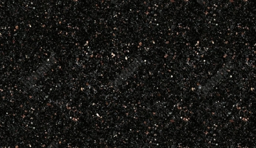

Doğal taşlar / Granit
Doğanın güçlü
karakteri.
Kristal dokusu ve kendine özgü renkleriyle granit yüzeyler.
Koleksiyonu keşfetGranit hakkında
Doğanın eşsiz
güzelliklerinden.
Yerkürenin içerisinde bulunduğu toprağın fiziksel koşulları ve barındırdığı minerallerle oluşumunu tamamlayan Granit dünyanın dört bir yanında farklı desenleriyle çıkarılıyor. İki granit deseninin hiçbir zaman birbirine benzemeyişi yeganeliğinin kusursuz ispatı…
Doğal şekilde yüzyıllarca toprakta soğuyarak güzelliğini adım adım tamamlayan Granit magmanın bizlere sunduğu eşsiz güzelliklerden biri... Kristal yapısı ile kendi çizgisini belli eden dünyanın en dirençli taşının genel olarak renkleri açık ve yüzeyleri tanelidir.
Granit; zarif duruşu, estetik yapısı ve kolay kombine olma özelliğiyle yüzyıllardır insanlar tarafından kullanılma sebebi olan yaşayan efsanedir. İnsanoğlunun yaşamını sürdürdüğünden beri varlığını koruduğuna inanılan Granit M.Ö. 2590 yıllarında kırmızı Piramitte kırmızı granit kullanıldığı düşünülmektedir.
Mutfak tezgâhı, merdiven basamağı, yüzey döşeme, dış cephe kaplama, banyo tasarımında oldukça tercih edilen Granit sert yapısı sayesinde beton harca karıştırılarak daha sağlam yapılar elde edilmesinde rol oynuyor.
Granit karşılaştığı tüm darbelere kaşı çizilmeyen, asit ve yıpratıcı olan etkilere karşı direnç sağlayan, hava koşullarına bağlı olarak solmayan, sıvıları emmediği için bakteri oluşumunu önleyen dünyada yüzeyi en pürüzsüz ender harikalarından…

Renkler
Doğal granit yüzeylerini ve renk seçeneklerini keşfedin.
02 / RehberÜrün bakımı
Granit yüzeylerin günlük temizliği ve bakımı hakkında bilgi alın.
Bakım bilgilerine git → 03 / BilgiSertifikalar
ve belgeler
Ürün belgeleriyle ilgili bilgi için Bekamar ekibiyle iletişime geçin.
Bilgi al →Granit / Renkler
Yüzeyde
doğal bir imza.
Granit koleksiyonundaki renk ve desen seçenekleri hakkında güncel görsel ve ürün bilgisi için ekibimize ulaşın.
Granit koleksiyonunu sorYüzey rehberi
GRANİT TEZGAH
BAKIM VE ONARIMI
Granit tezgahlar ıslak bir sünger yardımıyla temizlenmelidir. Kullanılan süngeri ılık su ve biraz sıvı bulaşık deterjanının yardımıyla granit tezgah üzerinde dairesel hareketlerle ovmanız yeterli olacaktır. Tezgah yapılan işlem sonrasında temiz bir bezle kurulanmalıdır.
Granit tezgahlar üzerinde aşındırıcı kimyasallar kullanılmamalıdır. Kullanılan kimyasallar granit yüzeyin üstünde bulunan koruyucu tabakaya zarar vereceğinden dolayı kullanılması önerilmemektedir. Aynı şekilde sirke ve bazı temizleyici kimyasallar asit içerdiği için granit tezgahların temizliğinde kullanılmamalıdır.
Granit tezgahların bakımı için üretilmiş dolgu malzemeleri piyasada mevcuttur. Temin edeceğiniz bu ürünleri kuru bir bezle granitin yüzeyine homojen bir şekilde uygulayın. Dolgu ürünü tamamen kuruduktan sonra temiz bir pamuklu bezle tezgahınızı ovun. İşlem bittiğinde granit tezgahınızın parlaklığının arttığını göreceksiniz.
Ürün bilgisi
Sertifikalar
ve belgeler
Ürün bazlı sertifika ve teknik belgeler hakkında bilgi almak için bizimle iletişime geçin.
Bekamar’a ulaşın